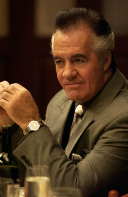

The Sopranos" zooms in on Tony Soprano, a New Jersey mob boss with a twist. It's all about him juggling the wild world of organized crime while trying to keep his family life from falling apart. It's a gritty, intense look at the life of a mobster with more than just mob problems.
CharactersTony SopranoPlayed by: James Gandolfini Paul Gualtieri  Played by: Tony Sirico Jennifer Melfi Played by: Lorraine Bracco |